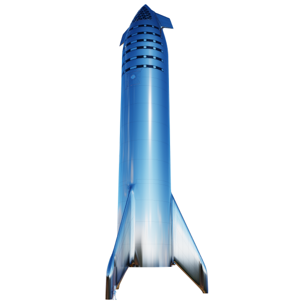

Starship
The SpaceX Starship system is a fully-reusable, two-stage-to-orbit, super heavy-lift launch vehicle.

The Space Shuttle Columbia disaster was a fatal incident in the United States space program that occurred on February 1, 2003, when the Space Shuttle Columbia (OV-102) disintegrated as it reentered the atmosphere, killing all seven crew members.
The Hubble Space Telescope is a space telescope that was launched into low Earth orbit in 1990 and remains in operation. It was not the first space telescope, but it is one of the largest and most versatile, well known both as a vital research tool and as a public relations boon for astronomy.
A space capsule is an often-crewed spacecraft that uses a blunt-body reentry capsule to reenter the Earth's atmosphere without wings. Capsules are distinguished from satellites primarily by the ability to survive reentry and return a payload to the Earth's surface from orbit.
In the context of spaceflight, a satellite is an object that has been intentionally placed into orbit. These objects are called artificial satellites to distinguish them from natural satellites such as Earth's Moon. On 4 October 1957 the Soviet Union launched the world's first artificial satellite, Sputnik 1